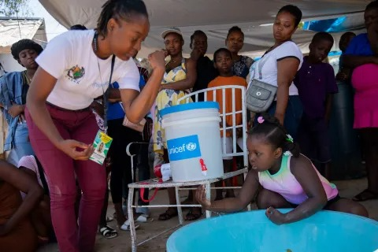
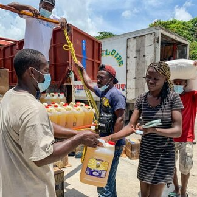
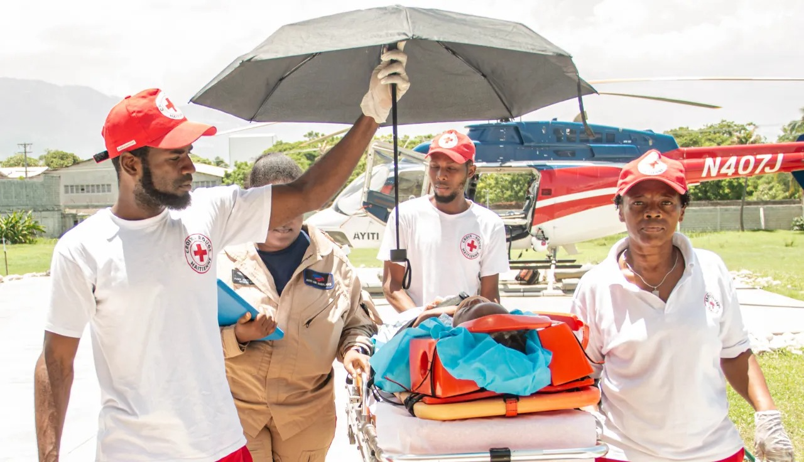
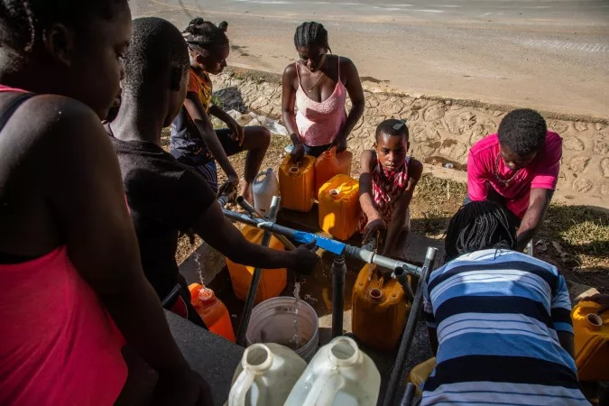
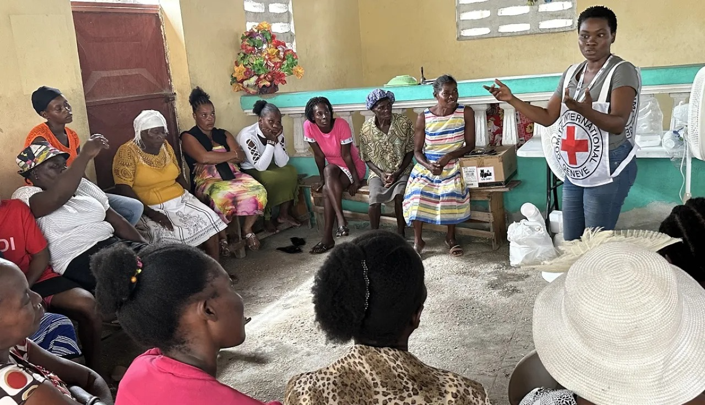
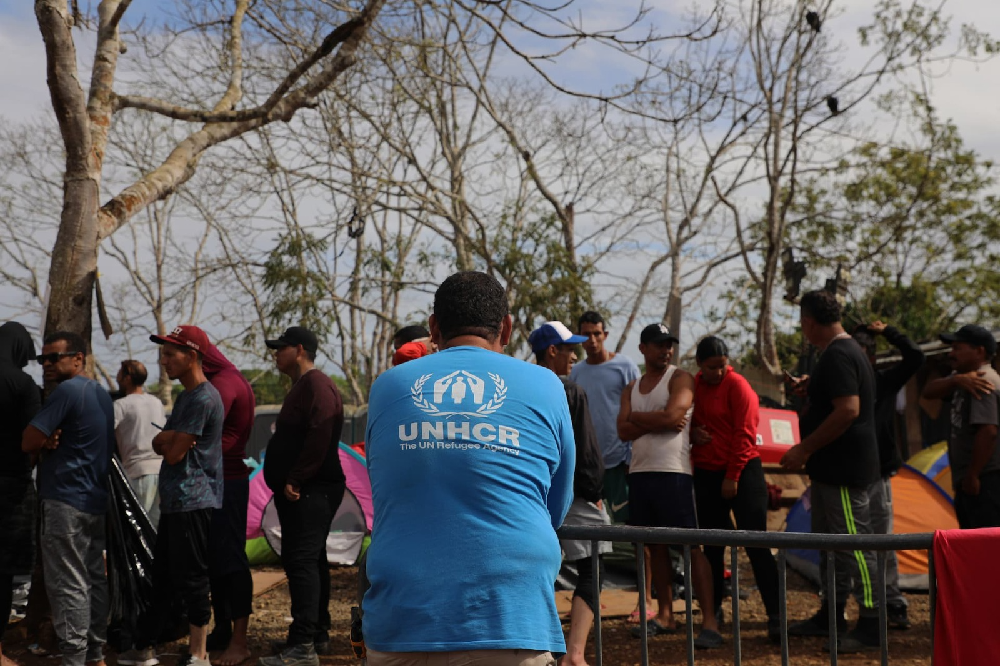

We only suggest trusted, official and verified websites

UNICEF supports children and families in Haiti by providing essential humanitarian assistance, including healthcare, nutrition, clean water, education, and child protection during emergencies.
https://www.unicef.org/appeals/haiti
WFP provides emergency food assistance and humanitarian support to vulnerable communities in Haiti affected by hunger, disasters, displacement, and other crises.
https://www.wfp.org/emergencies/haiti-emergency
The International Rescue Committee helps people affected by crisis in Haiti through humanitarian assistance, healthcare, protection, education, and support for vulnerable communities.
https://www.rescue.org/country/haiti
CARE works with communities in Haiti to respond to emergencies and strengthen access to food, healthcare, clean water, livelihoods, and other essential support.
https://www.care.org/our-work/where-we-work/haiti/
The ICRC provides humanitarian protection and assistance to people affected by violence and crisis in Haiti, including support for vulnerable communities and essential services.
https://www.icrc.org/en/where-we-work/haiti
UNHCR works to protect and assist displaced people, refugees, and vulnerable communities in Haiti, providing humanitarian support, protection, shelter, and essential assistance.
https://www.unhcr.org/haiti